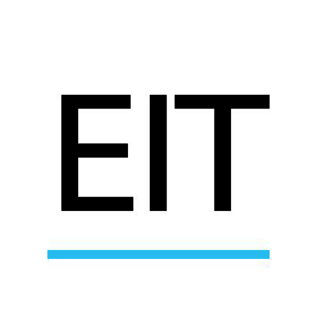

Visor de las giras de campo de la Escuela de Ingeniería Topográfica de la Universidad de Costa Rica
Mapa de Costa Rica
 La Escuela de Ingeniería Topográfica de la Universidad de Costa Rica, ha tenido en los últimos años un crecimiento exponencial, tanto académicamente como en desarrollo e incorporación de nuevas tecnologías a la docencia y la investigación. Bajo este marco se ha creado una área de investigación con la adquisición y la incorporación de vehículos aéreos no tripulados, sistemas LiDAR y sensores remotos; esto a generado la necesidad de poder ofrecer a la comunidad académica, profesional y civil, un portal donde se pueda exponer información relevante y divulgar las áreas de acción de la EIT, que pueda ser consultada para la toma de decisiones de diferentes actores, por lo que se ha convertido, en una necesidad para la Escuela de Ingeniería Topográfica, con este objetivo se ha creado un área de laboratorio de investigación nombrado Laboratorio de Geomática, con el fin de generar información relevante. La maestría en Sistemas de Información Geográfica y Teledetección viene a convertirse en la mejor forma de poder alcanzar los objetivos planteados, por su relación directa con el área en estudio, pudiendo aportar todos los principales elementos académicos, para la realización y materialización de futuros proyectos.
Implementar la infraestructura necesaria para la creación de un Sistema de Información Geográfica, como herramienta de visualización del impacto de la Escuela de Ingeniería Topográfica de la Universidad de Costa Rica en al ámbito nacional.
© Gustavo Lara Morales 2019